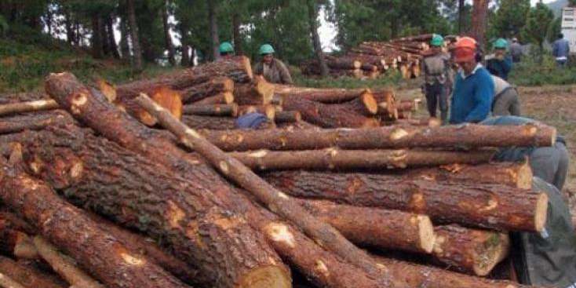
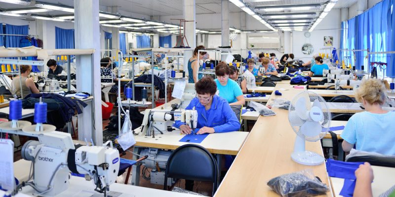
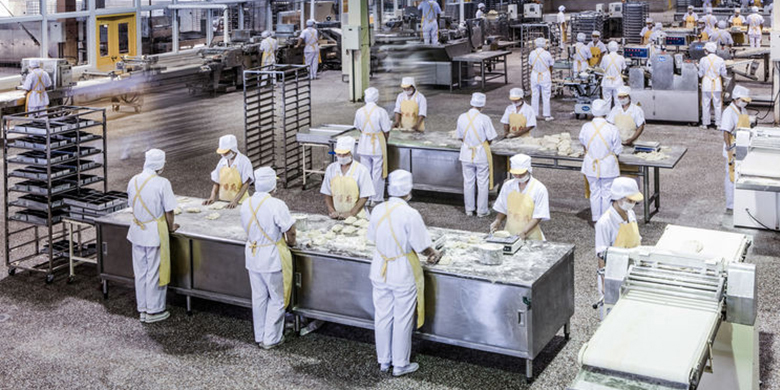
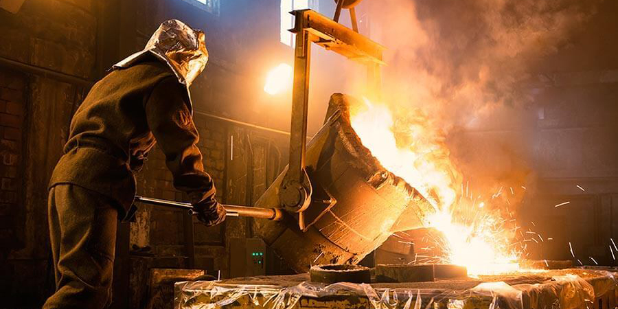
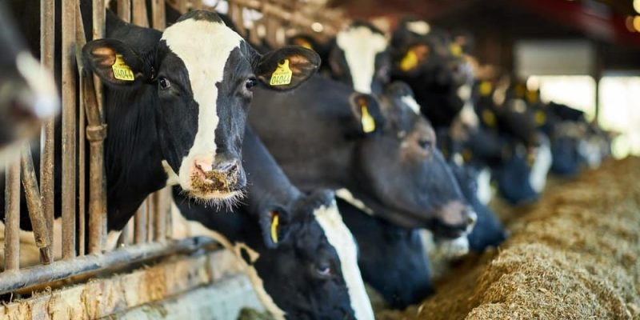
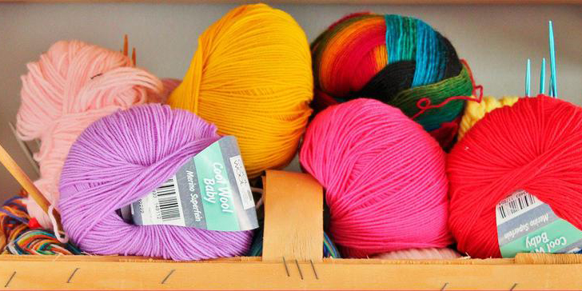
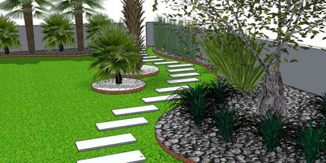

SubSectores Productivos
Listado de Trayectos %%
Actividad Bomberil
 Actividades Recreativas (Turismo)
Actividades Recreativas (Turismo)
 Administración (Salud)
Administración (Salud)
 Administración y Gestión (Administración)
Administración y Gestión (Administración)
 Administración y Gestión (Hotelería y Gastronomía)
Administración y Gestión (Hotelería y Gastronomía)
 Administración y Gestión de las Organizaciones (Informática)
Administración y Gestión de las Organizaciones (Informática)
 Análisis de Procesos y Productos Metalmecánicos (Mecánica, Metalmecánica y Metalurgia)
Análisis de Procesos y Productos Metalmecánicos (Mecánica, Metalmecánica y Metalurgia)
 Análisis y Programación de Sistemas (Informática)
Análisis y Programación de Sistemas (Informática)
 Aplicada al Equipamiento Frío - Calor (Electromecánica)
Aplicada al Equipamiento Frío - Calor (Electromecánica)
 Aplicada al Equipamiento Industrial (Electromecánica)
Aplicada al Equipamiento Industrial (Electromecánica)

Aplicado a la Industrialización de la Madera (Madera y Mueble)
 Artístico y Artesanal (Actividades Artísticas Técnicas)
Artístico y Artesanal (Actividades Artísticas Técnicas)
 Atención al Cliente (Hotelería y Gastronomía)
Atención al Cliente (Hotelería y Gastronomía)
 Audio, Video, Radio y Tv (Electrónica)
Audio, Video, Radio y Tv (Electrónica)
 Carpintería (Madera y Mueble)
Carpintería (Madera y Mueble)
 Cerámica (Actividades Artísticas Técnicas)
Cerámica (Actividades Artísticas Técnicas)
 Cocina (Hotelería y Gastronomía)
Cocina (Hotelería y Gastronomía)
 Construcción de Obra Civil (Construcción)
Construcción de Obra Civil (Construcción)
 Construcciones de Base Húmeda (Construcción)
Construcciones de Base Húmeda (Construcción)
 Construcciones en Seco Livianas (Construcción)
Construcciones en Seco Livianas (Construcción)
 Contabilidad (Administración)
Contabilidad (Administración)
 Cosmetología (Estética Profesional)
Cosmetología (Estética Profesional)
 Cuero (Cuero y Calzado)
Cuero (Cuero y Calzado)

Diseño de Indumentaria y Textil (Textil e Indumentaria)
 Diseño, Decoración y Ambientación (Actividades Artísticas Técnicas)
Diseño, Decoración y Ambientación (Actividades Artísticas Técnicas)
 Elaboración de Bebidas (Industria de la Alimentación)
Elaboración de Bebidas (Industria de la Alimentación)

Elaboración de Productos Alimenticios (Industria de la Alimentación)Elaboración y Conservación de Alimentos (Industria de la Alimentación)
 Electricidad / Electrónica (Automotriz)
Electricidad / Electrónica (Automotriz)
 Enfermería (Salud)
Enfermería (Salud)
Especialidades (Salud)
Forestal (Agropecuario)
Generación, Transporte y Distribución de Energía Eléctrica (Energía Eléctrica)
 Hotelería (Hotelería y Gastronomía)
Hotelería (Hotelería y Gastronomía)
Idioma (Turismo)
Impresión (Industria Gráfica y Multimedial)
Industria Gráfica (Industria Gráfica y Multimedial)
 Instalaciones de Energía Eléctrica en Inmuebles (Construcción)
Instalaciones de Energía Eléctrica en Inmuebles (Construcción)
 Instalaciones Sanitarias y de Gas (Construcción)
Instalaciones Sanitarias y de Gas (Construcción)
Mantenimiento y Reparación de Automotores (Automotriz)
Mantenimiento y Reparación de Carrocería (Automotriz)
Mantenimiento y Reparación de Motores de Combustión Interna (Automotriz)
Mantenimiento y Reparación de Sistemas de Frenos (Automotriz)
 Mantenimiento y Reparación de Sistemas de Suspensión y Dirección (Automotriz)
Mantenimiento y Reparación de Sistemas de Suspensión y Dirección (Automotriz)
Metalmecánica (Mecánica, Metalmecánica y Metalurgia)
Metalmecánico por Arranque de Viruta (Mecánica, Metalmecánica y Metalurgia)
Metalmecánico por Conformado (Mecánica, Metalmecánica y Metalurgia)

Metalurgia (Mecánica, Metalmecánica y Metalurgia)Minería (Minería e Hidrocarburos)
Muebles (Madera y Mueble)
Multimedial (Industria Gráfica y Multimedial)
Operación y Administracion de Comunicaciones
 Orfebrería y Bijouterie (Actividades Artísticas Técnicas)
Orfebrería y Bijouterie (Actividades Artísticas Técnicas)
 Panadería y Repostería (Hotelería y Gastronomía)
Panadería y Repostería (Hotelería y Gastronomía)
 Peluquería (Estética Profesional)
Peluquería (Estética Profesional)

Producción Animal (Agropecuario)
 Producción Artesanal (Actividades Artísticas Técnicas)
Producción Artesanal (Actividades Artísticas Técnicas)
 Producción Vegetal (Agropecuario)
Producción Vegetal (Agropecuario)
 Productos Lácteos (Industria de la Alimentación)
Productos Lácteos (Industria de la Alimentación)
 Recursos Humanos (Administración)
Recursos Humanos (Administración)
 Redes Informáticas (Informática)
Redes Informáticas (Informática)
Renovables (Energía)
 Reparación y Mantenimiento de Máquinas y Equipos Eléctricos (Energia Eléctrica)
Reparación y Mantenimiento de Máquinas y Equipos Eléctricos (Energia Eléctrica)
 Servicios (Agropecuario)
Servicios (Agropecuario)
 Tapicería (Textil e Indumentaria)
Tapicería (Textil e Indumentaria)

Tejido (Textil e Indumentaria)
 Terminaciones Decorativas y Funcionales (Construcción)
Terminaciones Decorativas y Funcionales (Construcción)
Transversal
 Usuarios (Informática)
Usuarios (Informática)
Utilización de la Energía Eléctrica en Inmuebles (Energia Eléctrica)
Utilización de la Energía Eléctrica en la Industria (Energia Eléctrica)
 Vialidad (Construcción)
Vialidad (Construcción)

Vivero y Espacios Verdes (Agropecuario)